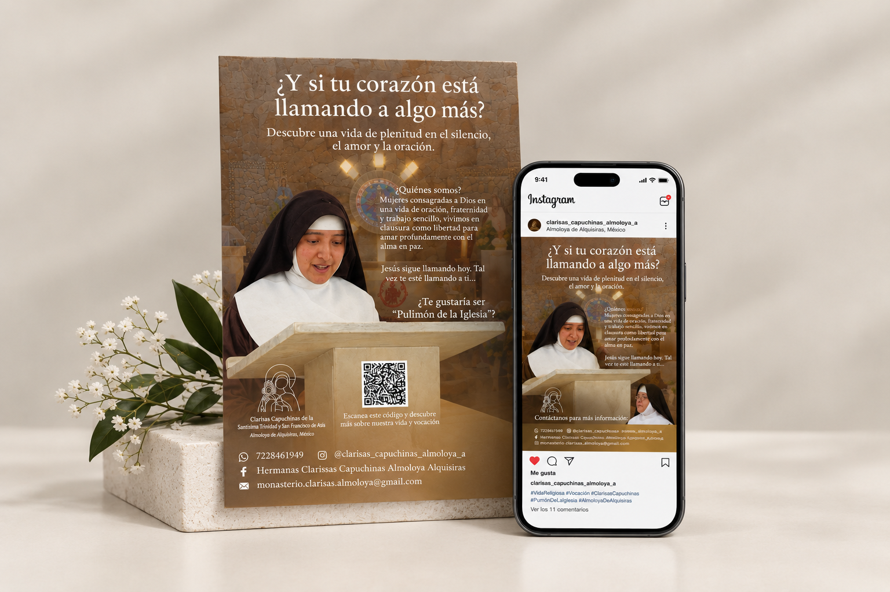
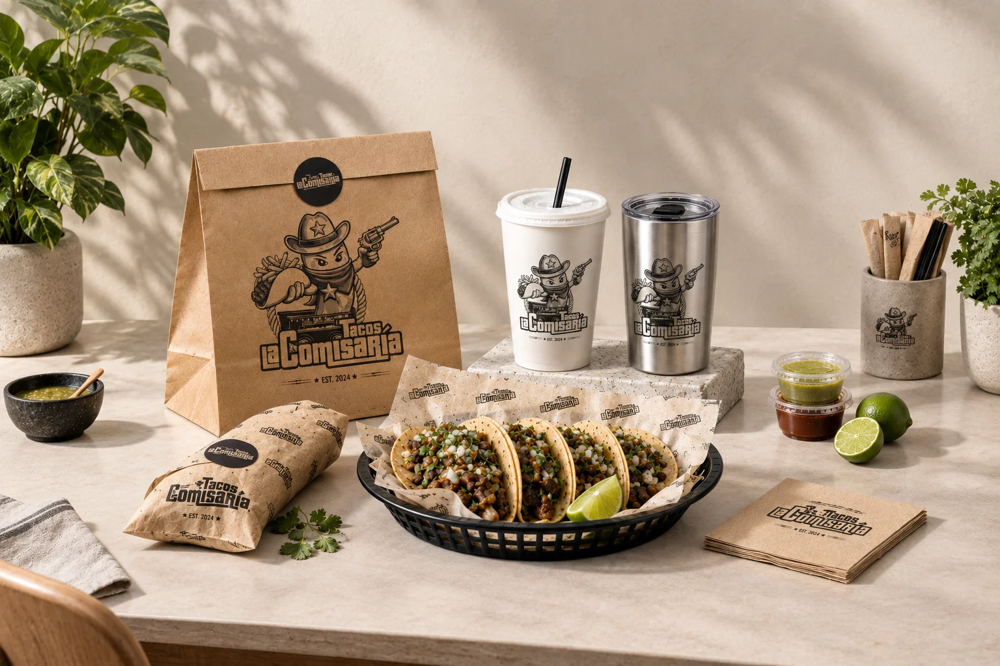
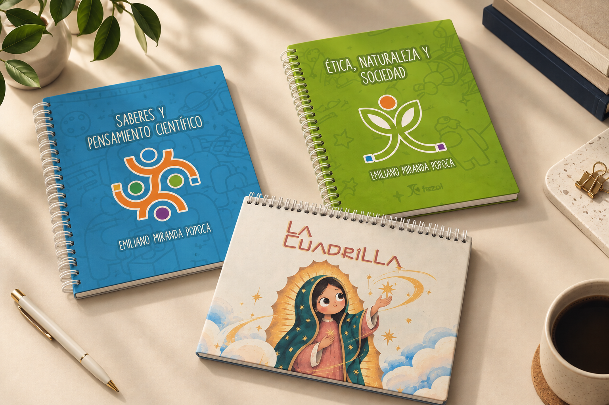

Dirección Visual
concepto, contenido y comunicación.
Marketing / Dirección de arte / Contenido / Comunicación visual
Una selección de trabajos donde la composición, el producto, el mensaje y el contenido se organizan para construir una presencia visual coherente.

Cuando una idea necesita una imagen clara.
La dirección visual conecta concepto y ejecución: desde una pieza para redes hasta una composición de producto, cada elemento debe reforzar el mensaje.
Esta selección reúne distintos ejercicios de comunicación y marketing presentes en el portafolio actual.


